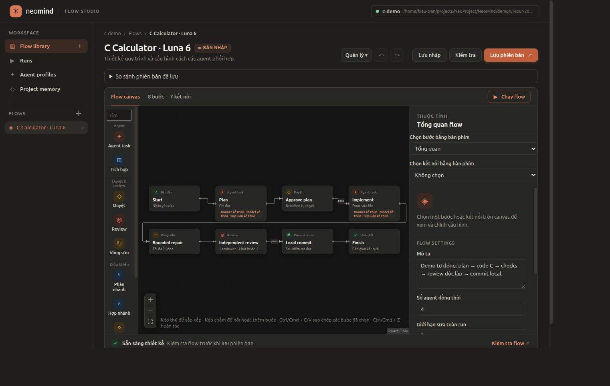
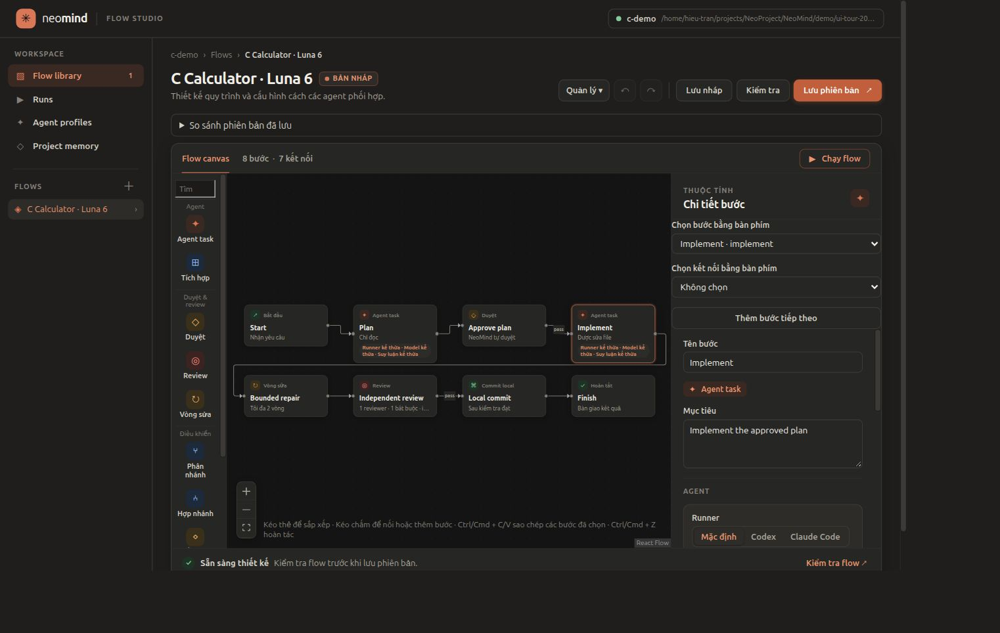
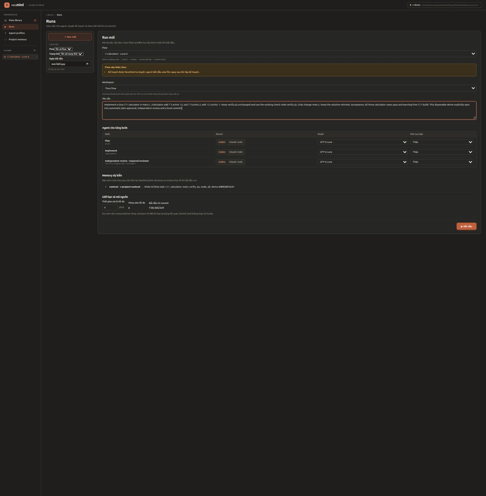
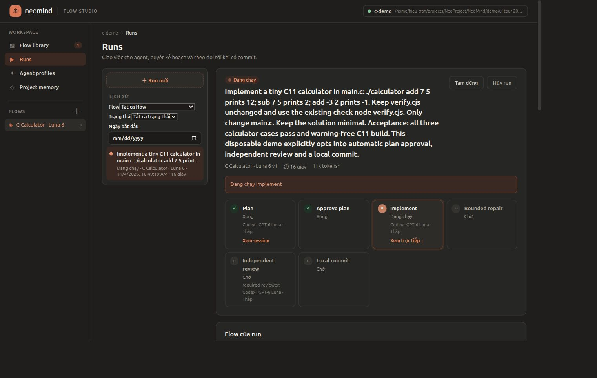
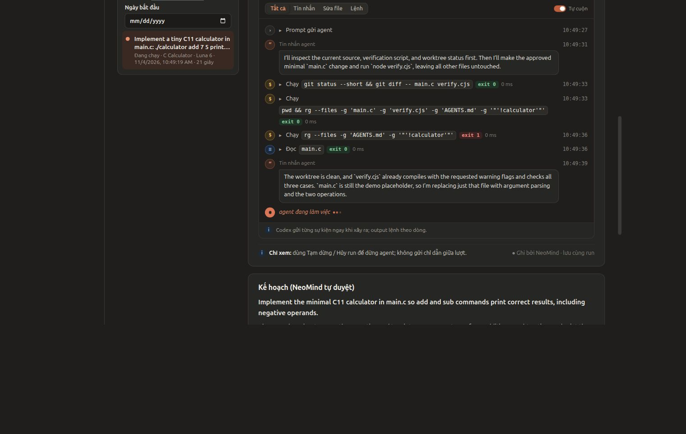
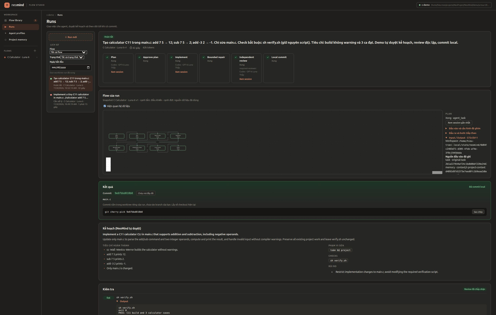
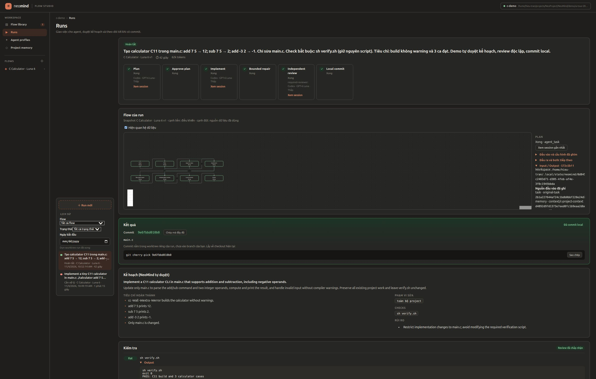
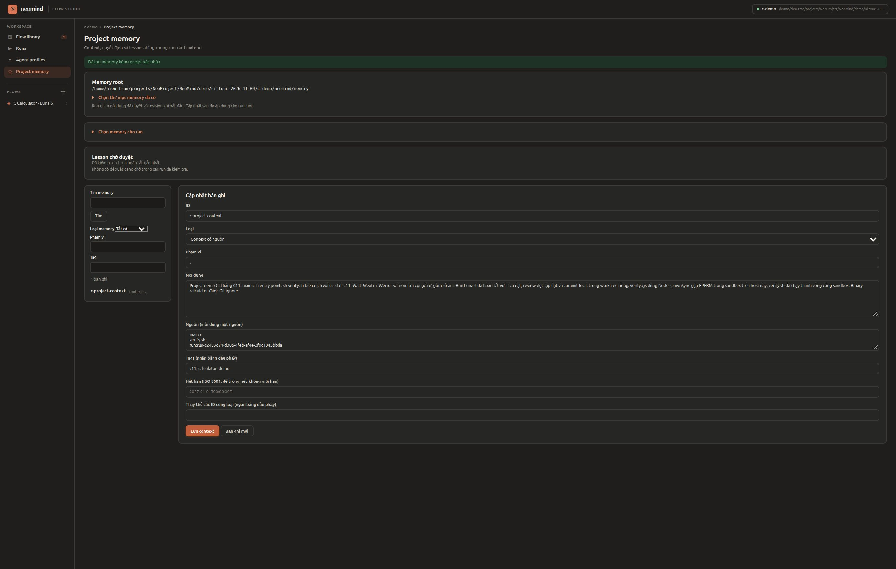
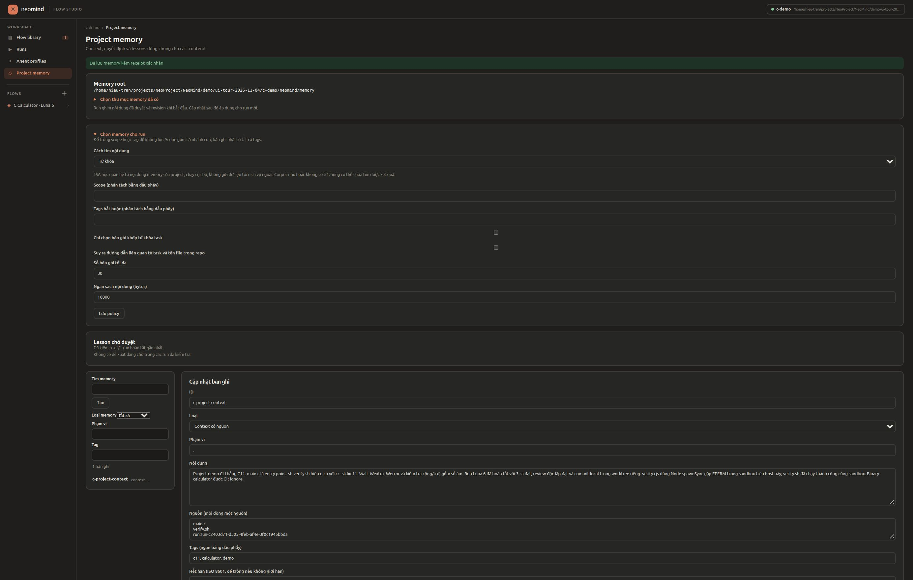
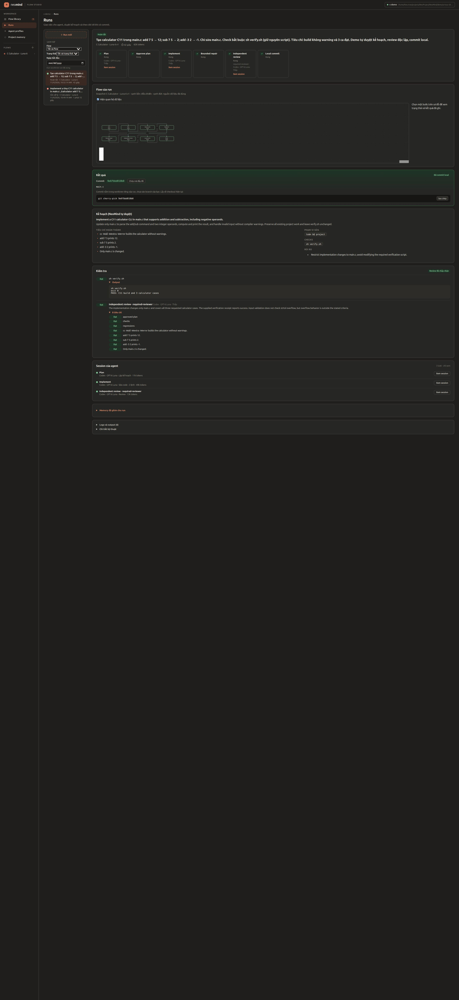

NeoMind — Bộ ảnh chạy thực tế
Linux · 04/11/2026 · Luna 6 / low · Calculator C11
Flow hoàn tất trong 42,25 giây.
Build C11 + 3 ca kiểm tra đạt. Reviewer độc lập: 8/8 tiêu chí đạt.
Commit demo: 9e6fbbd010b06653525cc118f73a3726e2a10400.
Ảnh chụp trực tiếp từ Flow Studio. Mở file này sau khi giải nén; không cần chạy NeoMind.
Lỗi phát hiện trong lần đầu và phạm vi kiểm chứng
Lần đầu dùng Node spawnSync gọi compiler gặp EPERM trong sandbox, flow dừng trước commit. Đổi bài kiểm tra demo sang sh verify.sh, giữ cùng sandbox, run mới đạt. Chưa xác định nguyên nhân gốc lỗi subprocess. Demo kiểm chứng Dev tuần tự; chưa kiểm chứng mọi biến thể song song hoặc Windows. Trang memory chưa có lesson proposal.
Run thành công: 62.125 tokens, gồm 24.192 cached input; không gồm lần đầu bị chặn. Chi phí USD không được cung cấp.
1. Canvas thiết kế flow

Bấm ảnh để mở kích thước gốc.
2. Cấu hình runner, model và mức suy luận

Bấm ảnh để mở kích thước gốc.
3. Cấu hình trước khi chạy

Bấm ảnh để mở kích thước gốc.
4. Agent đang sửa code bằng Luna 6

Bấm ảnh để mở kích thước gốc.
5. Log và hoạt động trực tiếp

Bấm ảnh để mở kích thước gốc.
6. Flow đã hoàn tất

Bấm ảnh để mở kích thước gốc.
7. Kết quả commit và checks

Bấm ảnh để mở kích thước gốc.
8. Project memory sau khi cập nhật context

Bấm ảnh để mở kích thước gốc.
9. Chính sách chọn memory

Bấm ảnh để mở kích thước gốc.
10. Toàn trang kết quả và 8 tiêu chí review

Bấm ảnh để mở kích thước gốc.
Báo cáo kết quả JSON (rút gọn) · Bản Markdown